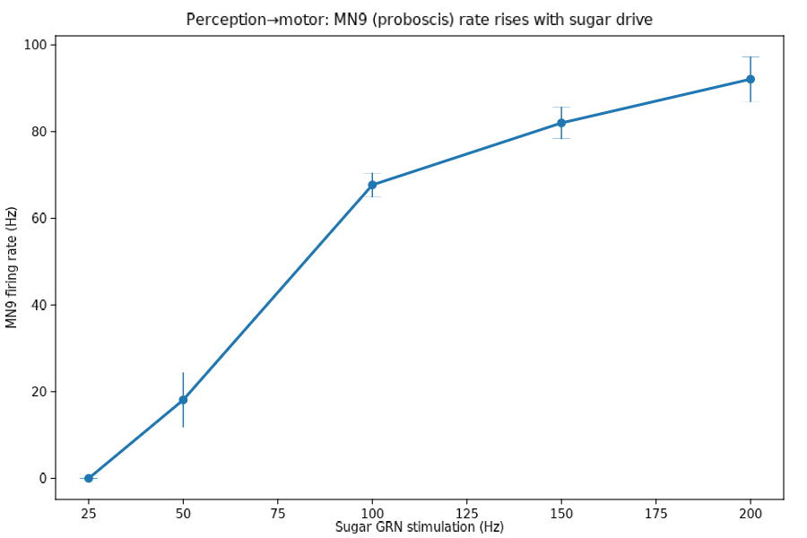
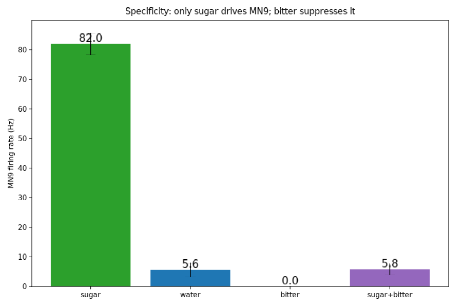
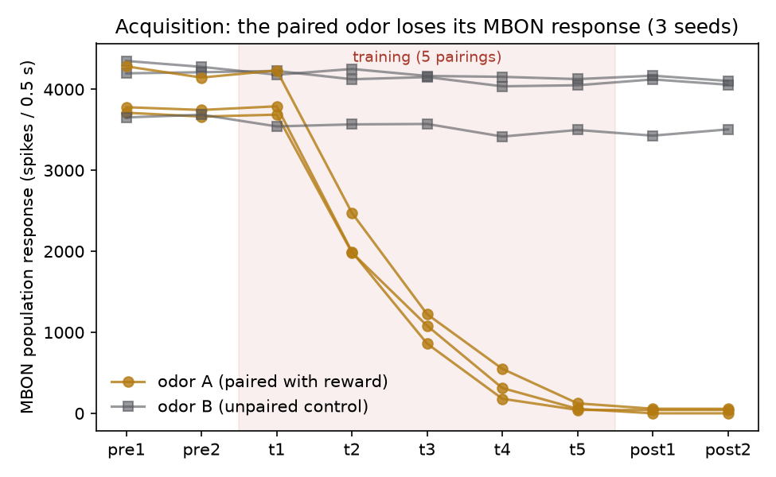
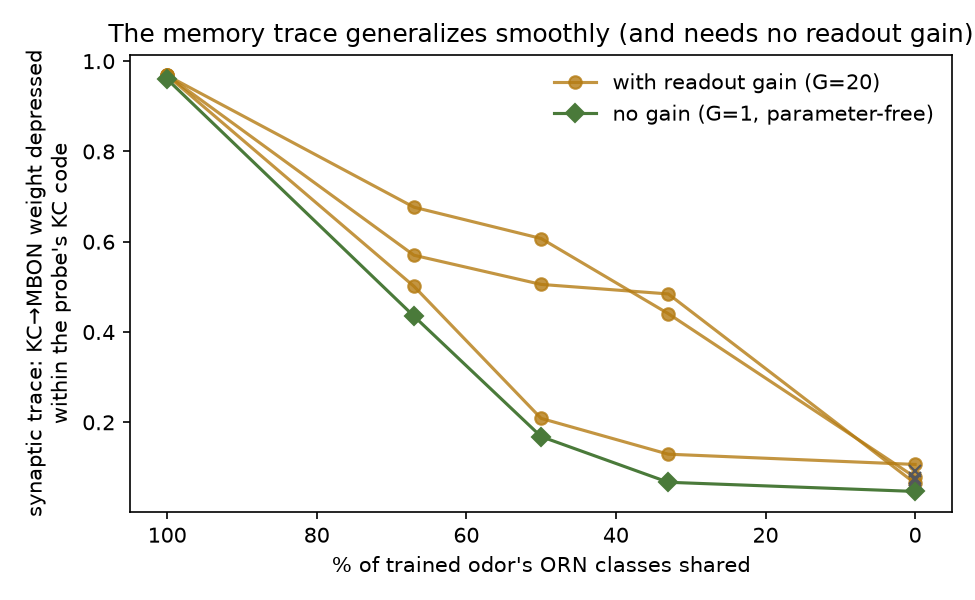
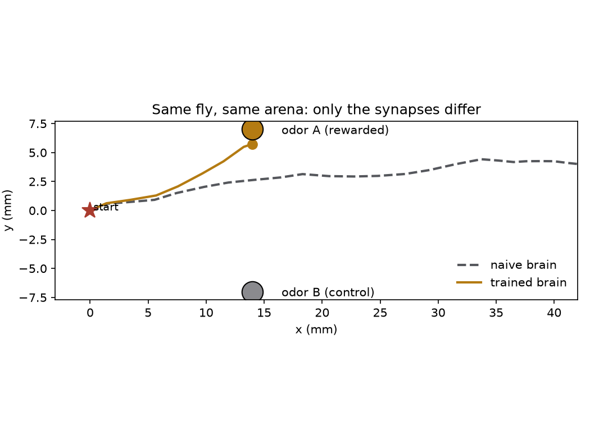

fly-api · demo fly-connectome-demo · 2026-09-08
Waking the Fly Brain
A fruit fly's complete wiring diagram — all 139,255 neurons and 50 million synapses of the FlyWire connectome — now runs as a working nervous system on one CPU box. This page is the record of getting it to taste, walk, and see — standing on published models we reproduced and integrated (what's ours vs. prior art) — and the opening move of fly-api: an SDK for deploying and training the fly architecture in realistic simulation.
The brain, tasting
We ran the entire connectome as leaky integrate-and-fire neurons
(Shiu et al. 2024's model): each connection's weight is its synapse
count, its sign the predicted neurotransmitter. Then we stimulated the
fly's sugar-sensing gustatory neurons and read out MN9 — the
motor neuron that extends the proboscis to eat.


| input (150 Hz) | MN9 "eat" command | reading |
|---|---|---|
| sugar neurons | 82.0 Hz | feed |
| water neurons | 5.6 Hz | faint interest |
| bitter neurons | 0.0 Hz | refuse |
| sugar + bitter | 5.8 Hz | 93% veto |
The body, walking
The fly, seeing
The brain, learning
Can it learn? We added the fly's actual learning rule — dopamine-gated depression at Kenyon-cell→MBON synapses — to the connectome's olfactory pathway and ran classical conditioning: odor A paired with a reward signal, odor B unpaired. Getting a stable substrate first required a real finding: the published whole-brain model is bistable — almost any central input ignites a permanent ~8,400-neuron storm — and four structural edits (each biologically argued, no parameter tuning) kill it.


The loop, closed: navigating to the learned odor
The finale ties everything together: the conditioned spiking brain is put in the loop with the body. Two odor sources sit in the arena — amber A (paired with reward during conditioning) and grey B (control). Every decision step, each antenna's local odor mixture is fed to the live 8,991-neuron brain, and its MBON output steers the walk. Same fly, same arena, same controller — only the KC→MBON synapses differ:

How the demo worked
Two open stacks, one afternoon of glue. The brain is
Shiu et al.'s
Brian2 model over FlyWire v630 — 8 stimulation conditions × 10 trials
ran in ~19 minutes on 8 cores at ~2.5 GB per worker. The body is
flygym 1.2.1 in MuJoCo, rendered
headlessly on a GPU-less box by extracting libosmesa6 from the
Ubuntu package into a local prefix (no sudo required). Every number and
video regenerates from demo/ in the repo.
torch+flyvis that the
simple taxis demo never uses, and VisualTaxis accepts an
arena argument it silently fails to hand to the simulation
(the camera then binds to an arena that was never compiled).Read of the result
The claim these demos support is narrow but real: both foundation layers — whole-brain connectome dynamics and embodied simulation — run cheaply on commodity CPU, and the connectome's graph alone already computes correct sensorimotor behavior at the circuit level. What they don't yet show is the loop closed between them: the LIF brain emits motor commands and the body consumes descending drives, but nothing wires one to the other yet. Honest caveats: synapse counts are a crude weight proxy, neurotransmitter signs are predictions, and gap junctions and neuromodulation aren't in the wiring diagram at all.
Next
- Close the loop: map LIF motor-neuron populations onto flygym actuators and sensory neurons onto the retina — a spiking counterpart to FlyGM's trained graph controller.
- Build the seam: one API over connectome-as-architecture and body-as-environment, with neuron models (rate / LIF / NODE) and training strategies (flyvis-style BPTT, FlyGM-style IL+RL) as plugins.
- Then train: connectome vs matched rewired controls on GPU, seeded ensembles — the field's reported retraining instability is exactly what a standard harness should fix.
Explore
- Source: dtch1997/fly-api — demo drivers, figures, videos, full demo report.
- FlyWire — the connectome itself, browsable neuron by neuron.
- What existed vs. what we added — the honest ledger of prior art and contribution.
- The shoulders this stands on: Shiu et al. LIF model · NeuroMechFly · flyvis · FlyGM.